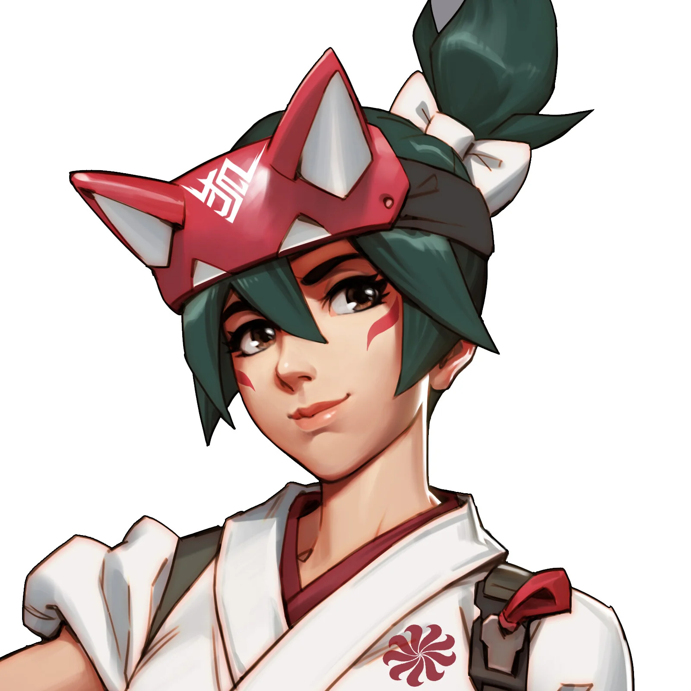
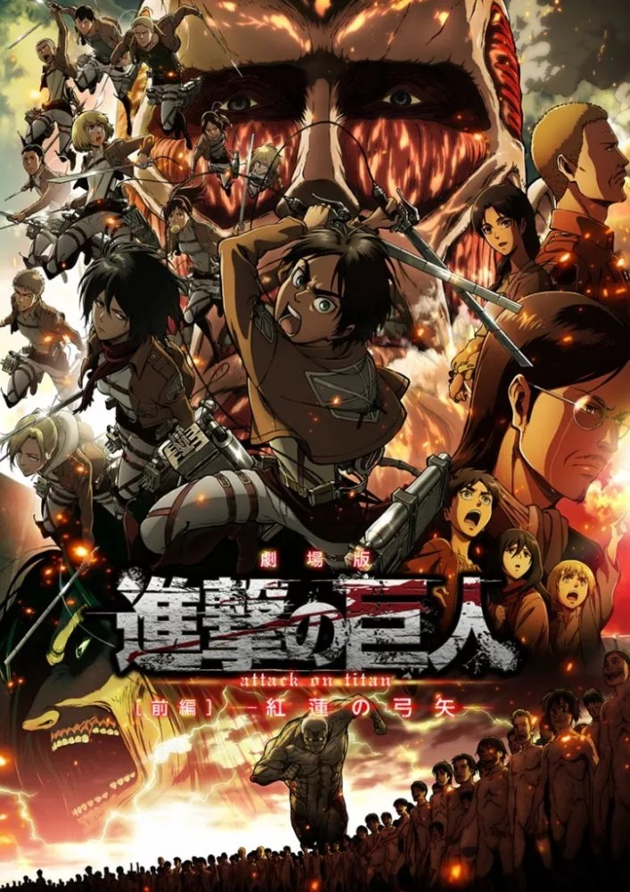

Les jeux vidéos
J'ai commencé à rentrer dans le monde des jeux vidéos suite à ma découverte de Pokemon Noire.
C'est bien plus tard, que j'ai découvert les jeux en ligne comme Overwatch 2 et Fortnite.
- La licence Pokémon

- Mon premier jeu Pokemon :
Pokemon Noir

- Mon jeu Pokemon préféré :
Pokemon Rubis Oméga et Saphir Alpha

- Mon Pokémon préféré
Rayquaza

- Mon premier jeu Pokemon :
- Fortnite

- Overwatch

Mes personnages préférés :
- Faucheur

- Kiriko

- Faucheur
Les animés et les mangas
J'avais une vague connaissance des grands animes connus comme Dragon Dall et Naruto.
Et un jour, à la télé, j'ai vu Naruto et j'ai tout de suite accrocher à ce type d'oeuvre.
Suite à ça, j'ai regardé des centaines d'animes comme Sword Art Online, L'Attaque des Titan, Naruto, Eighty-six, etc.
- Sword Art Online (SAO)

- L'Attaque des Titan (SNK)

- Naruto

- 86 (Eighty-six)